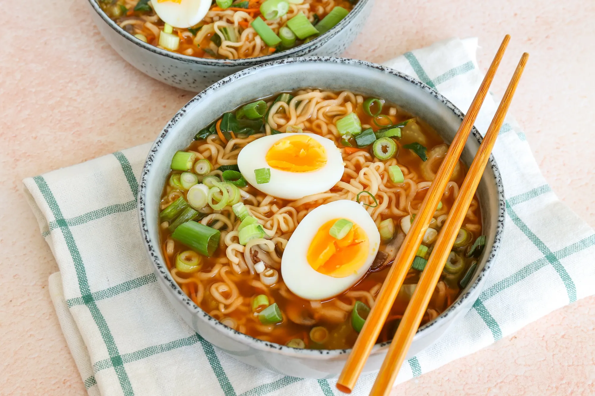

Hotdogs uit de oven

Ingrediënten
- 1 pakje Pulmuone Air dried ramyun spicy noodles
- 2 paksoi stengels
- 100 gr peen julienne
- 125 gr champignons
- 2 eieren of zonder eieren mocht je voor een vegan versie gaan
- 2 bosuien
- 600 ml water
Bereidingen
- Snijd de paksoi, bosui en champignons in stukjes.
-
Kook de eieren in 8 minuten hard. Laat de eieren schrikken en pel ze.
Halveer de eieren.
-
Doe de Pulmuone noodles, paksoi, peen julienne, champignons en Pulmuone
spicy kruiden met water in een kleine pan en verwarm circa 5 minuten.
Roer goed door.
-
Verdeel de soep vervolgens over twee borden en serveer met ei en bosui.